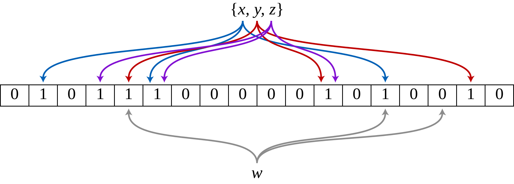

布隆过滤器是为了解决查询一个元素是否存在于某个集合之中。
例如：50亿个用户ID，查询某ID是否在这50亿集合之中。
50亿*8字节大约为50GB，内存占用极大。
所以一般采用 位数组，以及位数组的延伸设计：布隆过滤器。
在学习布隆过滤器之前，我们需要有些基础性概念：
哈希函数
哈希函数，即散列函数。它可以任意长度的输入通过算法转换成一个定长的输出，这个输出就是散列值，或者叫哈希值。
因为是无穷对应有限，则必有多个输入对应相同的输出，即散列冲突，或叫哈希冲突。
哈希算法有以下特点：
- 从输出无法推导出输入。
- 散列冲突的概率要尽可能小。
- 数据敏感，对输入的简单修改会导致输出的巨大差异。
位数组
位数组本质上是一个超长的bit数组，数组元素只能为0或1。
根据上文，如果50亿个用户ID是有序的，使用bit数组实际上很好判断。
将每个ID映射到数组下标之中，用1代表存在，0代表不存在，如果有一段数学意义上连续的ID，还可以用一位数组下标映射一段ID，内存占用将更小。
但如果用户ID不是自增的，如果50亿用户ID，按照ID为10位来计算，将有超过90亿种可能排列，使用位数组要占用超过100GB内存。
这几乎是无法接受的。
布隆过滤器
布隆过滤器(Bloom Filter)的核心组件是一个超长的位数组和若干个哈希函数 。
布隆过滤器的查询复杂度为O(k)，k为哈希函数的个数，并且支持并发修改或查询。
设数组长度为m，哈希函数个数为k。
在初始状态下，数组每个元素都被设置为0。
当有元素加入过滤器时，通过k个哈希函数，计算k个数组下标，并将数组下标所在元素置为1。
当查询时，再次通过k个哈希函数，计算得k个数组下标，并检查数组下标是否全部为1。若是，则该元素存在于集合中，反之则不存在于集合中。

误判问题
通过上述插入与查询逻辑可以推导得：
布隆过滤器不会将集合里的元素误判为不在集合之中。
用具象的话来理解就是：宁可放过，绝不误伤。
这很好理解，如果在集合内的元素，哈希计算后的下标所对应的元素都为1，不会出现误伤现象。
而如果反过来想想，如果这个元素不在集合之中，由于哈希冲突，在极端情况下，该元素所有哈希计算后的下标对应元素都为1，那么可能会造成不在集合之中的元素放行。
所以造成了布隆过滤器的误判问题。
误判率计算
设数组长度为m，哈希函数个数为k，数组内已添加n个元素。
则可以推导：
-
数组中某一特定的位在进行元素插入时的 Hash 操作中没有被置1的概率是：
-
在所有 k 次 Hash 操作后该位都没有被置 1 的概率是：
-
如果我们插入了 n 个元素，那么某一位仍然为 0 的概率是：
-
该位为 1 的概率是：
-
则经过 k 个哈希函数后仍然错误的概率为：
求最优参数
根据布隆过滤器性质可知，k 必须为整数。
在一般情况下，m 与 n 不在开发者能调控的范围之内。
所以一般最优参数都指的是求 k 的最优参数，即：在 k 为何值时，过滤器的误判率最小。
根据数学性质，对于给定的 m 和 n，最小化误报概率的 k 值为：
布隆过滤器的删除问题
在布隆过滤器中，一般情况下是无法删除元素的，因为存在哈希冲突，所以可能会把其他元素对应的下标置为0，导致未被删除的元素被误认为不存在集合之中。
为了解决这个问题，可以采用 计数删除 方案。
简单来说，为每个下标计数，如果下标被置为 1 则为计数器 +1，反之则减1。
这样会保留下来其他元素的映射信息。
计数回绕
同时，这种方法会存在计数回绕问题。
计数器类型为了节省内存，一般用unsigned修饰，它只能表示非负整数，因此其取值范围是从0到最大值。例如，如果使用8位无符号整数，其取值范围是0到255。
当计数器的值达到最大值时，再进行+1操作会导致计数器值溢出，即超出了它能表示的最大值，导致计数器的值变为0。这个过程就是计数回绕，这导致当哈希冲突次数过多，超过计数器类型能表示的范围时，计数器反而会变成0，影响布隆过滤器的判断。
同理，当计数器为0且 -1 时，也会导致计数器值溢出。